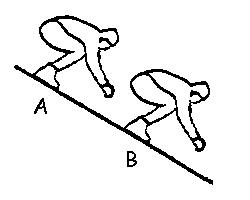
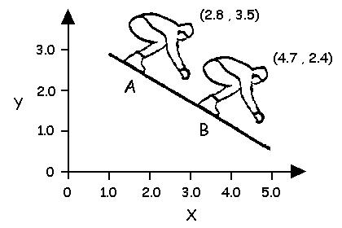
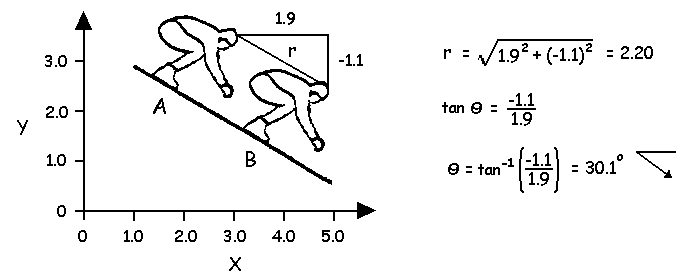
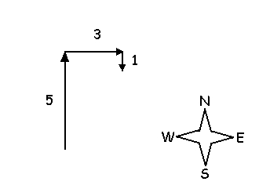
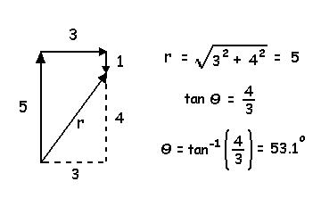

Linear Kinematics
Kinematics are variables that describe motion. Motion is the act or process of changing place or position with respect to some reference point. Kinematic variables include displacement, velocity and acceleration. The previous lectures have discussed forces in static equilibrium that prevent motion and also friction that tends to oppose motion. We now look more closely at motion and kinematics.
Linear motion occurs when every part of the body travels through the same distance, in the same direction, and in the same time. This is also called translation.

The ski jumper who remains in the same posture as he travels down a constant slope from A to B is an example of translation or linear motion.
We have used the XY axis system to define two orthogonal directions of forces and we can also use it to describe changes in position or displacement.
The skier's head has changed from an initial position of (2.8,3.5) to a final position of (4.7,2.4).
The displacement in the X direction is calculated by subtracting the initial X position from the final X position
Δ X = 4.7 - 2.8 = 1.9
The displacement in the Ydirection is calculated by subtracting the initial Y position from the final Y position
Δ Y = 2.4 - 3.5 = -1.1
Displacement is the vector quantity that describes an object's change in position so we use trigonometry to calculate the resultant magnitude (r) and direction (Θ) of the displacement of the skier's head.

Distance describes the total distance traveled by the object. If there is no change in direction, displacement and distance are the same. However, as soon as the object changes direction, distance will be greater than displacement. Find the displacement and the distance using the diagram on the right of a person who walks 5 km north, then 3 km east and finally 1 km south.
Solution:
The distance walked by the person is 9 km (5 + 3 + 1 = 9) but since the direction changed, the displacement will be different than the distance. In this case, the person was displaced 4 km north (5 - 1) and 3 km east.
The resultant displacement (r) is 5 km in the direction of 53.1 degrees north of east.